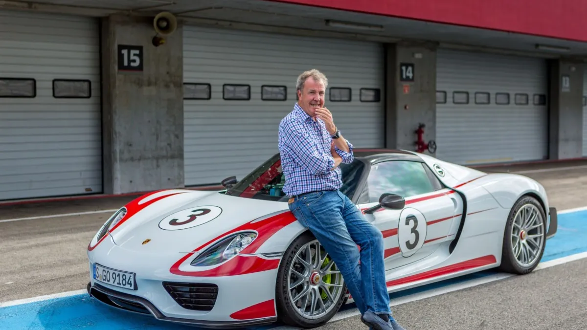

"Power & Speed!"
Jeremy Clarkson
El Provocador PrincipalFamoso por su búsqueda obsesiva de potencia pura ("POWERRR!"), su odio declarado hacia las caravanas y su estilo sarcástico que transformó un programa técnico de autos en un fenómeno mundial del entretenimiento.